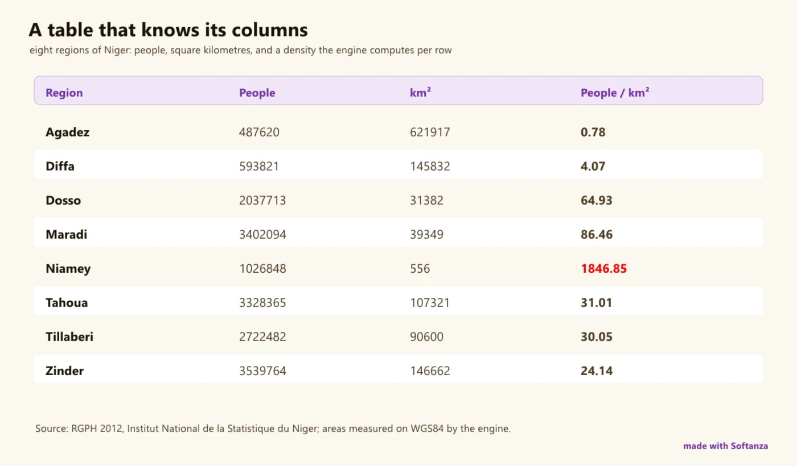

Une table est une grille que l'on lit comme une feuille de calcul : des colonnes nommées, des lignes et des cellules. Et chaque colonne est une liste : tout ce qu'on peut demander à une liste, on peut le demander à une colonne.
C'est toute la courbe d'apprentissage. Une colonne est une liste que l'on somme ou filtre par une condition ; ajouter une ligne, retirer une colonne, lire une cellule et chercher dans une colonne disent ce qu'ils font avec les mots qu'on emploie pour les tables ; la somme, la moyenne, le minimum et le maximum du tableur, les regroupements et les tableaux croisés marchent sur la table directement. Les données entrent et sortent en CSV, JSON et HTML, et le vrai SQL est à un pas, par une base SQLite embarquée.
oT = new stzTable([
[ :ORDER, :ITEM, :PRICE ],
[ 1, "Tea", 3 ],
[ 2, "Rice", 5 ],
[ 3, "Tea", 3 ]
])
# a column is a list you can sum, or filter with a condition
? @@( oT.Col(:PRICE) )
#--> [ 3, 5, 3 ]
exécuté dans la bibliothèque le 2026-10-20
Onze classes sœurs, cellules, colonnes, lignes, structure, sous-ensembles, recherche, tri, remplacement, agrégation, affichage, ont été fondues en une seule stzTable, 2 517 méthodes sous un seul nom, pour que chaque méthode atteigne toutes les autres. Le moteur porte les parties lourdes : un tri sans copie qui permute un index et déplace les colonnes compagnes, des colonnes calculées compilées une fois et évaluées sur toutes les lignes, huit statistiques de résumé par colonne, et les statistiques elles-mêmes confiées au stzDataSet partagé, parce que deux classes se sont un jour contredites sur une variance et que les définitions dupliquées dérivent.
oTab = new stzTable([
[ :Region, :Product, :Sales ],
[ "North", "Tea", 10 ],
[ "North", "Rice", 30 ],
[ "South", "Tea", 20 ],
[ "South", "Rice", 5 ]
])
o1 = new stzPivotTable(oTab)
o1 {
SetRowsBy(:Region)
SetColsBy(:Product)
SetValues(:Sales)
SetAggregateFunction(:Sum)
Generate()
}
# sales of tea in the north
? o1.Value("North", "Tea")
#--> 10
# everything the south sold
? o1.RowTotal("South")
#--> 25
? o1.GrandTotal()
#--> 65
exécuté dans la bibliothèque le 2026-10-20
Une table se valide par motif : une seule expression stzTablex énonce la forme, les clés uniques, les valeurs manquantes et les moyennes qu'une table doit respecter, à la place d'un code de vérification procédural, et le même langage interroge plusieurs tables à la fois.
La ligne honnête est courte et précise : il n'y a pas de jointure ; le regroupement et le filtrage tournent encore hors du moteur, bien que les ponts du moteur pour les deux soient compilés et en attente ; et le moteur en colonnes accélère les opérations plutôt qu'il ne possède les données. Compétente pour construire, trier, agréger, croiser et décrire ; pas encore un remplaçant de pandas, et la page le dit.

huit régions du Niger, une table composée par le moteur. rendu le 2026-10-01 à 04:00 par le script de rendu du site tools/areas.ring, exécuté dans la bibliothèque au commit 0e72e2e2c · la source(s'ouvre dans un nouvel onglet)
Où il en est
La lecture du Compas Softanza : chaque couloir du domaine noté face au meilleur de sa catégorie, d'après ce que les gardes prouvent (Read from the source on 2026-09-16). Les phrases du Compas sont en anglais, telles qu'il les a écrites.
One enormous unified class — 2,517 methods, eleven sibling caps merged into a single stzTable — with engine-backed sort, aggregates, calculated columns, describe and pivot, plus a distinctive multi-table "TableX" pattern-query language. But measured against pandas, Polars and DuckDB it has three real holes: there is no join at all; group-by and filter run Haro-side even though engine bridges for both sit exported-but-unused; and the columnar engine is used per-operation, not as the live store. Ambition is pandas-eager, well short of Polars / DuckDB's vectorized columnar execution.
The honesty line on the ratings. The curated suites are green — test_table_* (core / access / aggregate / search / structure / engine-delegation) plus narrated calc-column, aggregation and regression guards (~90+ assertions) — and the lane ratings rest on those. The legacy numbered suite is not: 150 of 251 files error, overwhelmingly renamed methods from the 11→1 merge. And several lanes are rated on the Haro path that runs, not the engine bridge that exists but is never called (group-by, filter).
The one-sentence position. Softanza's tables are a broad, unified, partly engine-backed data-frame with a distinctive multi-table pattern language — competent for construct / sort / aggregate / pivot / describe — but they are not yet a pandas replacement, let alone a Polars/DuckDB one: no join, a Haro-side group-by, and a columnar engine that accelerates operations rather than owning the data.
Ce qu'un artisan en fait, et ce qui se distingue
A multi-table TableX pattern-query language with no direct peer
A copy-free index-permutation engine sort
Engine-first calculated columns, compile-once over all rows, guarded at 50k rows
Eleven sibling caps merged into one stzTable namespace
Ce qui est dû
Add joins: there is no join anywhere in the tables lane
Wire group-by and filter to the engine bridges already compiled and exported
Finish the 11-to-1 fidelity grind (150 of 251 legacy tests error)
Missing-data toolkit (fillna / dropna) and melt / unpivot
Repensé depuis les premiers principes
Ce que Softanza a gardé de ce qui marche, et ce qu'elle a repensé, tel que la bibliothèque l'a écrit dans ses documents de conception et ses narrations.
La manière SoftanzaUne table est une grille qu'on lit comme un tableur — colonnes nommées, lignes et cellules — et chaque colonne est une liste qu'on peut interroger.
Gardé des meilleures pratiques
Les données sont rangées par colonne, car les colonnes ont un nom et pas les lignes, et l'analyse de données traite chaque variable comme une colonne. source(s'ouvre dans un nouvel onglet)
Les fonctions de tableur familières (SUM, AVERAGE, MIN, MAX, PRODUCT), le regroupement avec agrégats et les tableaux croisés s'appliquent directement à une table. source(s'ouvre dans un nouvel onglet)
Des formats standard en entrée et en sortie : CSV, JSON et tableaux HTML, plus du vrai SQL grâce à une base SQLite embarquée (stzDatabase). source(s'ouvre dans un nouvel onglet)
Repensé
Les méthodes parlent clair — AddRow, RemoveCol, Cell, FindInCol — comme on pense une table, plutôt qu'en jargon de data frame, pour un apprentissage en douceur. source(s'ouvre dans un nouvel onglet)
Une colonne est une liste : ce qu'on demande à une liste — somme, filtre par condition — se demande aussi à une colonne, et qui sait les listes sait les tables. source(s'ouvre dans un nouvel onglet)
Les tables se valident par motif : une seule expression stzTablex décrit forme, clés uniques, valeurs manquantes et moyennes, au lieu d'un code de vérification procédural. source(s'ouvre dans un nouvel onglet)
Une table confie sa colonne à l'objet statistique au lieu de recalculer elle-même, car les définitions dupliquées divergent : deux classes ont déjà donné 4 et 4,57 pour une variance. source(s'ouvre dans un nouvel onglet)
La manière Softanza, exécutée
Ce que Softanza fait autrement dans ce domaine, montré par du code tiré de ses narrations et de ses gardes, et exécuté pour cette page.
Une colonne est une liste : on peut la sommer ou y chercher avec une condition, comme dans toute liste.
12 couloirs, chacun face au meilleur de sa catégorie
Pour chaque couloir : ce qui tourne dans le moteur aujourd'hui, les outils contre lesquels il est juste de le mesurer, et ce qui reste dû.
01Calculated & derived columnsStrong
In the engine
AddCalculatedCol with an @(:ColName) formula, lowered engine-first through StzEngineListEvalRows — compile-once over all rows, with a Haro eval() fallback for non-arithmetic formulas. Guarded at 50k rows, chained calc columns and insert-position semantics.
The one lane with measured engine scale. Short of Polars' fully-lazy vectorized expressions, but genuinely engine-backed and well-guarded.
02Sort & orderStrong
In the engine
SortOn(col) ascending or descending via StzEngineTableSortOn → table.zig sortOnColumn: an index-permutation std.sort.pdq that moves companion columns without copying row objects, plus IsSorted predicates.
Measured against
pandas sort_valuesPolars sortDuckDB ORDER BY
To complete
A clean, copy-free engine sort — at parity for the operation. Multi-key stable sort with mixed asc/desc per key would round it out.
03Construction & I/OSolid
In the engine
Build from list-of-columns or hashlist; round-trip CSV (with separator control), JSON, and HTML tables (FromHtml / ToHtmlXT); SQLite via stzDatabase over the vendored engine.
Measured against
pandas read_*Polars I/ODuckDB
To complete
No Parquet / Arrow / Excel, the formats a modern data library lives on. And two rough edges: FromJson is marked #TODO Test it, and the CSV iscsv guards fail on a function-redefinition collision.
04Columns, typing & accessSolid
In the engine
Heterogeneous columns with per-column type_hint and per-cell tags (int/float/string/null) tracked in table.zig; Cell, Row, Col, Section, add/remove/rename column.
Measured against
pandas dtypesPolars schema
To complete
Real typing, but many legacy access aliases (colsection, rowz, cellsincol, cellatposition) error after the 11→1 merge — the fidelity grind (see note) is exactly this surface.
05Select · project · filterSolid
In the engine
Filter(paColValues), FilterBy, and predicate-string FilterW / FilterWXT, plus column projection. Multi-table querying via the TableX pattern language over stzListOfTables.
Measured against
pandas query / locPolars filterDuckDB WHERE
To complete
The whole lane is Haro-side — the engine's ring_FilterRows exists but is never called — so filtering doesn't ride the columnar engine and won't vectorize.
06Reshape — pivot & transposeSolid
In the engine
stzPivotTable + stzPivotTableShow for multi-dimension pivots and crosstabs, engine-backed via StzEnginePivotCrossTab / ring_PivotGroupBy; plus Transpose variants.
Measured against
pandas pivot_table / meltPolars pivot / melt
To complete
No melt / unpivot / wide↔long — the inverse of pivot that tidy-data workflows depend on. Pivot ships; the reshape family is half-present.
07Describe & summary statsSolid
In the engine
Describe() over all numeric columns, engine-backed through frame.zig (StzEngineFrameDescribeAll = 8 stats/col: count, mean, median, stddev, min, max, Q1, Q3) plus whole-table regression (StzEngineFrameRegression).
Measured against
pandas describePolars describeDuckDB SUMMARIZE
To complete
Solid and engine-backed. The deeper statistical work (tests, distributions) lives on the Statistics page via stzDataSet — a separate, single-variable analyzer.
08The unified hierarchy & TableXSolid
In the engine
Eleven caps (cell/column/row access, structure, subset, search, finder, sorter, replacer, aggregator, display) merged into one stzTable namespace, so any method reaches any other; the old classes survive as ~1 KB shells. A distinctive TableX pattern language queries collections of tables.
Measured against
(architecture — no direct peer)SQL
To complete
The merge is sound engineering, but it left the legacy method surface unreconciled (150 erroring tests), and TableX is Haro-side and niche next to a real query language.
Scalar-per-column aggregation is fast and correct; the gap is grouped aggregation (lane 10), where the engine path exists but the Haro GroupBy doesn't use it.
10Group-by (grouped aggregation)Partial
In the engine
GroupBy(cols) / GroupByXT exist and work — but as pure Haro row-wise hash-string keying.
Measured against
pandas groupbyPolars group_byDuckDB GROUP BY
To complete
The engine already ships groupByAggregate (table.zig, ring_GroupBy) with O(n) hashed keys — but stzTable never calls it. The Haro path won't scale to the sizes Polars/DuckDB target.
No fillna / dropna / interpolate / forward-fill family — the everyday missing-data toolkit. Nulls can be detected but not systematically repaired or removed.
12Columnar scale & SQLPartial
In the engine
A real columnar engine exists (table.zig — contiguous per-column arrays, copy-free sort, O(n) grouping), and SQL is available through stzDatabase over vendored SQLite.
The Haro table keeps a row-wise @aContent and marshals the whole content per operation — the columnar engine is a per-op accelerator, not the live store. No query planner, no lazy execution; SQL is SQLite passthrough, not an in-house engine.
Deux lectures. La carte de l'Atlas (v21, 2026-09-30) donne 2 Strong, 6 Solid, 3 Partial, 1 Emerging ; la page du groupe, lue le Read from the source on 2026-09-16, note ses couloirs 2, 7, 3, 0. Les couloirs ci-dessous sont ceux de la page du groupe ; la carte est la lecture la plus récente.
Ce qui est dû, dans l'ordre du rendement
Les manques, classés par ce qu'ils rapportent et non par leur taille ; la valeur est l'effet sur la portée de la bibliothèque, l'effort une lecture d'ingénieur.
Tier A — foundational holes
Add joins
Inner, left, outer and cross joins — there is no join anywhere in the tables lane today, the single largest gap for a data-frame library. The columnar engine could host it; nothing does yet.
Valeur · élevéeEffort · moyen
Wire group-by & filter to the engine
ring_GroupBy / groupByAggregate and ring_FilterRows are already compiled and exported — stzTable just doesn't call them. Routing the Haro paths to the existing engine bridges is high leverage for near-zero new engine code.
Valeur · élevéeEffort · faible
Tier B — debt & everyday breadth
Finish the 11→1 fidelity grind
150 of 251 legacy table tests error, almost all R14 for method names not carried into the merged class. Reconciling them turns the advertised access surface from claimed into guarded — and the curated suites are already green to build on.
Valeur · élevéeEffort · moyen
Missing-data toolkit + melt
A fillna / dropna / interpolate family and a melt / unpivot to complete the reshape lane — the tidy-data operations every workflow reaches for.
Valeur · moyenneEffort · faible
Fix the I/O rough edges
Test and confirm FromJson (currently #TODO), and resolve the CSV iscsv function-redefinition collision that fails those guards.
Valeur · faibleEffort · faible
Tier C — the columnar ambition
Make the columnar engine the live store
Stop marshalling row-wise @aContent per operation; hold data column-wise in the engine and run filter / group-by / join vectorized through it. This is the step from pandas-eager toward Polars/DuckDB execution.
Valeur · élevéeEffort · élevé
Parquet & Arrow I/O
The formats a modern data library is expected to read and write, and the interchange layer that connects it to the rest of the ecosystem.
Valeur · moyenneEffort · moyen
An in-house relational query surface
A query layer over stzTable itself (select/where/join/group as one planned expression), beyond today's SQLite passthrough — so relational queries run on the library's own columnar engine.
Valeur · moyenneEffort · élevé
Les articles de ce domaine (2)
Les narrations que la bibliothèque a écrites sur ce domaine, chacune exécutée bloc par bloc avant d'être publiée ici.
"Code Meets Cells": The Spreadsheet Metaphor in Softanza's stzTable2025 · feature essayData tables are essential for many programming tasks, from data storage to complex analyses. Softanza's stzTable class for the Haro programming language provides an intuitive and powerful way to work with tabular data.
stzDataSet: Statistics as a Language of Thought2026 · tutorialIn Softanza, statistics isn't just formulas—it's a way of thinking about data. When a statistician examines data, he doesn't see numbers; he sees questions waiting for answers. His intent shapes which analytical lens he reaches for:
Les classes de ce domaine (15)
Chaque classe mène à sa page de référence : ses méthodes, chacune avec un exemple exécuté.